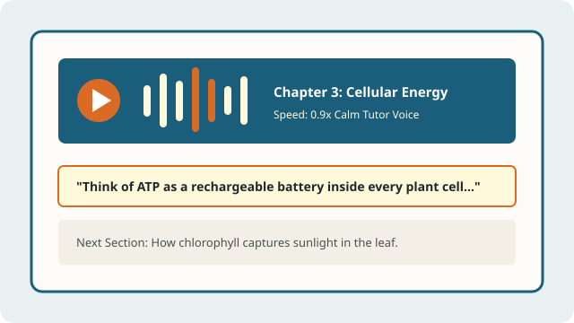

Proposed AI Audio Explanations and Multimodal Study Guides
Moving Beyond Monotone Text-to-Speech
Many university students with dyslexia use assistive listening tools to manage heavy reading loads. However, standard screen readers simply read convoluted textbook sentences verbatim in a flat, robotic voice—often stumbling over formulas, citations, and charts.
Our proposed AI Audio Explanation system generates warm, tutor-style walkthroughs that explain core concepts conversationally, using real-world analogies and clear pacing. This multimodal design follows the W3C Web Accessibility Initiative (WAI) Cognitive Accessibility Guidelines.

Conceptual Interface: Synchronized Audio Tutor & Highlighted Transcript
As the AI Audio Tutor speaks, the corresponding bullet point in the study guide is highlighted in warm amber so learners can track the text visually while listening:
Now Playing: Biology 101 — Chapter 3: How Plant Cells Create Energy
Synchronized Active Transcript (Sentence-Level Highlighting)
[00:00 - 00:45] Concept Intro: Instead of memorizing the long chemical name right away, picture a plant leaf as a solar-powered battery charger.
[00:46 - 01:35] Currently Highlighted: → "Inside the leaf's chloroplast, chlorophyll captures sunlight and uses that energy to snap a third phosphate group onto ADP—creating a fully charged ATP energy molecule."
[01:36 - 03:05] Diagram Breakdown: Next, let's look at the two arrows in Figure 3.2 to see where the oxygen exits the leaf.
Key Capabilities of the Audio & Study Material System
By pairing auditory explanations with clean, structured study outlines, learners can engage both visual and auditory channels simultaneously:
- Conversational Concept Summaries: Before tackling a 30-page textbook chapter, students can listen to a three-minute spoken overview that introduces the central thesis and real-world examples.
- Visual and Diagram Narration: The system describes flowcharts, scientific graphs, and historical timelines aloud so students do not have to decode dense figure captions alone.
- Synchronized Study Outlines: Audio explanations are paired with downloadable, dyslexia-friendly study outlines featuring clear topic hierarchies and self-check review questions.
- Customizable Pacing & Phonetic Pronunciation: Students can adjust narration speed (0.75x to 1.5x) and hear syllable-by-syllable pronunciations of unfamiliar academic terms.